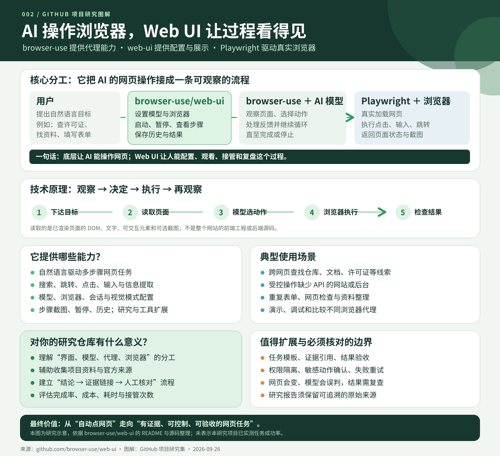

Web UI
你输入任务、选择模型和浏览器设置，查看执行过程。
控制台002 / BROWSER USE WEB UI / 能力解释
Browser Use Web UI 是 browser-use 代理的网页工作台：输入任务、配置模型和浏览器，观看代理逐步执行，并在需要时暂停或停止。底层代理负责理解页面并选择动作，浏览器控制层负责真正点击、输入和跳转。
能力把自然语言目标变成可观察、可控制的浏览器任务。
原理页面状态 → 模型决策 → 浏览器动作 → 再观察。
模块效果设置运行条件、执行任务、查看过程、生成研究报告和保存配置。
场景资料初探、受控网页操作、重复检查和代理教学评测。
对我的意义为研究项目收集线索，并建立来源证据与人工验收流程。
以下引导图和交互样例依据公开文档与源码整理。本研究未运行真实代理、网页任务或 AI 模型。

先把四个角色分清
你输入任务、选择模型和浏览器设置，查看执行过程。
控制台根据当前页面状态判断下一步应该做什么。
作决定组织观察、决策、执行和再观察的代理循环。
代理引擎真正加载页面，执行跳转、点击、输入和截图。
执行现场原理说明
代理获得当前页面的文字、DOM 中的可交互元素，以及按设置使用的截图。它看到的是浏览器呈现的页面状态。
模型结合任务和页面状态，决定要跳转、点击、输入、提取信息，还是结束任务。
Controller 将动作交给浏览器控制层执行；代理再次读取页面，检查是否朝目标前进，然后进入下一轮。
关键边界：它主要分析已渲染网页，不等于读取并理解网站完整的 React/Vue 工程或后端源码。模型报告“完成”后，重要结果仍要核对原始页面。
功能模块与实际效果
选择模型与提供方，设置提示词、视觉模式、规划模型、步数和每步动作数。效果是控制任务的推理方式和执行边界。
选择浏览器、无头模式、录制与连接方式，也可复用已有浏览器会话。效果是控制运行现场和登录状态。
输入自然语言目标，查看逐步截图、动作和最终历史；运行时可暂停、继续或停止。效果是让操作过程可追踪。
按计划并行浏览、搜索并汇总报告。效果是加快主题初探；报告结论仍需回到原网页核验。
保存和载入界面配置，便于重复运行相同环境。配置文件可能包含敏感设置，分享前应检查内容。
开发者可注册自定义动作或 MCP 工具，把网页操作接入更大的工作流；新动作的权限范围需单独审查。
交互演示 / 虚构页面与结果
下面的页面内容与动作都是教学样例。选择任务后点击阶段，观察“页面状态 → 模型决定 → 浏览器执行 → 结果核对”。
用户用自然语言说明目标。代理接下来需要打开网页，寻找能够证明答案的原始页面。
这里将展示代理看到的虚构网页状态。
打开示例仓库，找出许可证名称，并提供许可证文件链接。
演示 URL 为虚构地址，不代表真实项目的任务执行结果。
能力与边界
跨页面查找文字、链接和信息线索，适合开放式资料收集。
操作网页上的按钮、输入框与标签页；写入类动作需要额外确认。
逐步查看截图、动作和最终历史，必要时暂停或停止。
生成计划、并行搜索并汇总报告；报告中的事实仍要核对原始来源。
配置模型、视觉模式和浏览器会话，也可连接已有浏览器。
通过自定义 Controller 与 MCP 工具连接更多工作流。
能力依据：原仓库 README 与源码。本页未实测真实任务。
从演示走向实际工作
网页会变化，模型可能误读页面；复用登录态时还要管理账号权限。Deep Research 生成的报告也应逐条回到原始来源核对。
对这个研究集的价值
它既是一个理解 AI 浏览器代理分工的研究案例，也可以成为后续子项目的资料收集助手：先找到仓库、许可证、文档与图片来源，再由人核对并写入研究记录。
更值得投入的方向，是把“结论 → 原始链接 → 证据片段 → 人工验收”做成可追溯流程。这样，网页自动化才会真正提高研究效率。
查看完整研究记录与源码依据